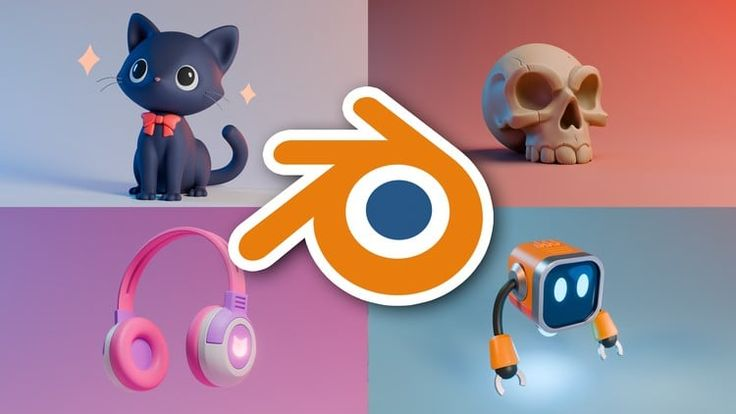

Cara Membuat Animasi 3D Sederhana di Blender
Published on January 8, 2025
Blender adalah salah satu perangkat lunak terbaik untuk membuat animasi 3D. Dalam artikel ini, saya akan berbagi langkah-langkah sederhana untuk membuat animasi 3D pertama Anda menggunakan Blender. Langkah-langkah ini akan membantu Anda memulai di dunia animasi 3D.
Read More

Tips Mengembangkan Website untuk Pemula
Published on December 20, 2024
Apakah Anda ingin memulai pengembangan website? Artikel ini membahas langkah-langkah dasar, mulai dari memilih domain hingga mengembangkan fitur-fitur penting yang harus ada di sebuah website modern.
Read More

Panduan Membuat Game Sederhana Menggunakan Unity
Published on November 15, 2024
Ingin membuat game sederhana? Artikel ini memberikan panduan praktis untuk menggunakan Unity dalam membuat game 2D pertama Anda. Dengan panduan ini, Anda dapat mulai mengeksplorasi dunia pengembangan game.
Read More